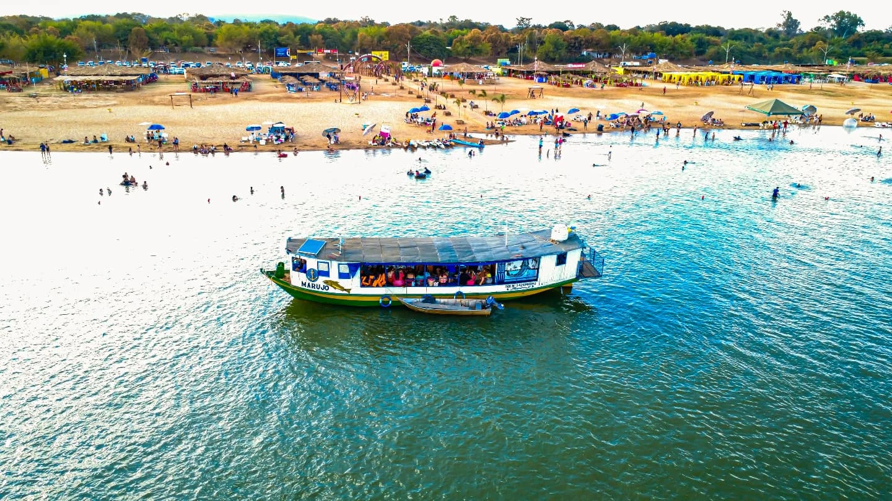
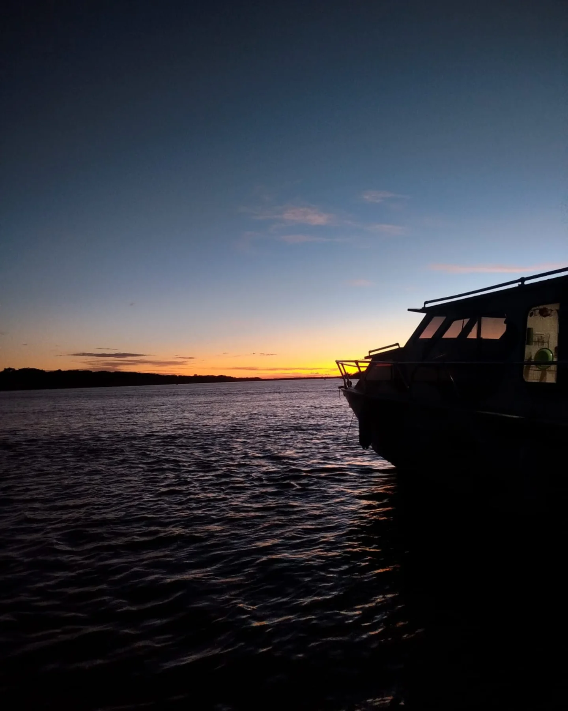

Passeios de Barco

Chalana do Marujo e Barco do Marujo
Viva uma experiência autêntica pelas águas do Rio São Francisco a bordo da tradicional Chalana do Marujo. Com capacidade para até 30 passageiros, a chalana é ideal para grupos, famílias e excursões. Para quem busca um passeio mais intimista, o Barco do Marujo atende grupos de até 4 pessoas. Confira as embarcações, roteiros e entre em contato para uma experiência incrível pelas águas do Velho Chico.
Roteiros na Chalana do Marujo
- Roteiro 1: Passeio pela Praia de Januária com retorno pela comunidade de Laranjeiras. Inclui parada na Ilha do Rodeador, onde os visitantes podem relaxar em uma choupana de palha, tomar banho de rio e aproveitar a tranquilidade do local.
- Roteiro 2: Navegação até o Cais de Januária, passando pela Praia de Januária. No retorno, parada na Ilha do Rodeador para lazer, banho e contato com a natureza.
- Roteiro 3: Roteiro até a cidade de Pedras de Maria da Cruz, passando sob a ponte sobre o Rio São Francisco e realizando uma breve parada na orla da cidade. Na volta, parada em uma praia fluvial para descanso e mergulho.
- Roteiro 4: Aventura com duração mínima de dois dias até a foz do Rio Pandeiros. O roteiro inclui pernoite em praia próxima à foz e, no dia seguinte, visita ao famoso "Pantanal Mineiro" em embarcação de menor porte.
Roteiros no Barco do Marujo
- Pôr do sol no Velho Chico: Saída das Moradeiras às 16h em direção ao Cais de Januária, passando pela Praia de Januária. O passeio inclui parada para banho e proporciona um espetáculo inesquecível ao entardecer. Para quem deseja prolongar a experiência, há a possibilidade de apreciar o luar e o céu estrelado às margens do rio, com direito a fogueira à beira do Velho Chico.
- Desbravando o Velho Chico: Passeio de maior duração até Pedras de Maria da Cruz, passando pela Praia de Januária, Cais de Januária, ponte sobre o Rio São Francisco e orla da cidade vizinha. Inclui parada para banho em praia fluvial. Há também a opção de estender o roteiro até o Pantanal Mineiro, nas proximidades da foz do Rio Pandeiros.
Diferenciais do Marujo: Opção de almoço e porções de peixe frito durante o passeio. A Chalana do Marujo é equipada com churrasqueira e também oferece pescarias, além de roteiros personalizados e viagens de maior duração para destinos como Carinhanha e Bom Jesus da Lapa.
Contato: João Vitor - (38) 99829-4285
Instagram: @chalana_marujo

Lancha do Velho Chico
A Lancha do Velho Chico proporciona experiências exclusivas para grupos de até 12 pessoas que desejam explorar as belezas do Rio São Francisco com conforto e sofisticação. Navegue por cenários encantadores do Velho Chico, desfrute de momentos inesquecíveis e escolha o roteiro que mais combina com você. Confira as opções de passeio e entre em contato para viver uma experiência única.
-
Opção 1: Passeio em Grupo - Aventura Compartilhada:
Para no mínimo 6 pessoas.
Duração: 3 horas de puro contato com a natureza.
Ideal para: Viajantes que querem viver a emoção do rio, conhecer novas pessoas e curtir um passeio incrível com um ótimo custo-benefício. -
Opção 2: Lancha Exclusiva - Seu Grupo, Suas Regras!:
Duração: 5 horas de liberdade total para personalizar seu roteiro.
Ideal para: Famílias, grupos de amigos ou equipes que buscam privacidade, conforto e flexibilidade. Tenha a lancha só para você e decida o ritmo do passeio.
Diferenciais da Lancha do Velho Chico: Os roteiros são personalizados de acordo com os interesses e preferências de cada grupo.
Contato: Gabriel (38) 99204-5464
Instagram: @lancha.velhochico